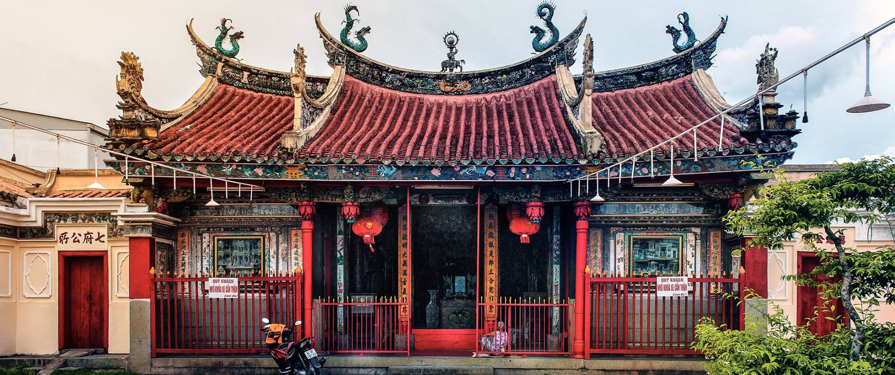

Chùa Ông
Lịch Sử & Kiến Trúc
Chùa Ông, chính thức là [Tên chính thức của chùa], được xây dựng vào [thời gian xây dựng] bởi [người xây dựng/cộng đồng]. Kiến trúc chùa mang đậm phong cách [phong cách kiến trúc], kết hợp hài hòa giữa yếu tố [yếu tố kiến trúc]. [Mô tả chi tiết về kiến trúc, vật liệu xây dựng, các công trình chính trong chùa].
Văn Hóa & Tôn Giáo
Chùa Ông là một trung tâm tín ngưỡng quan trọng của cộng đồng người Hoa tại Phan Thiết. [Mô tả về các vị thần được thờ phụng, các nghi lễ truyền thống, vai trò của chùa trong đời sống cộng đồng]. Vào dịp Tết Nguyên Đán, chùa được trang hoàng lộng lẫy, thu hút đông đảo người dân đến viếng thăm và cầu may mắn.
Hoạt Động & Trải Nghiệm
- Tham quan kiến trúc cổ kính của chùa.
- Thắp hương và cầu nguyện.
- Khám phá các hiện vật lịch sử và văn hóa.
- Chụp ảnh lưu niệm.
Thông Tin Hữu Ích
- Địa chỉ: [Địa chỉ cụ thể của chùa]
- Giờ mở cửa: [Giờ mở cửa]
- Điện thoại liên hệ: [Số điện thoại liên hệ]